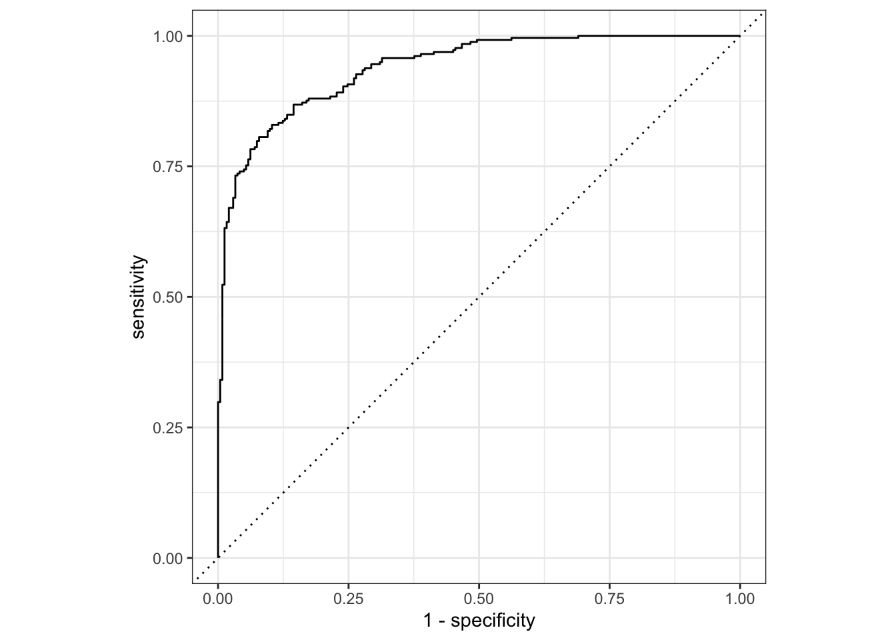

As we move into Unit II of this course, we turn our focus to classification.
A Taxonomy of Classification
Recall from before that we defined regression as the subset of supervised learning where the response (\(\by\)) was a continuous variable, or at least one that is appropriate to model as such.1 By contrast, classification considers \(\by\) to take values in a discrete set. Though this restriction may feel limiting, it is actually quite powerful. We consider several different forms of classification, based on the support of \(\by\):
Binary classification: in this simplest case, \(\by\) takes one of two values, which we conventionally code as \(\{0, 1\}\) or \(\{-1, +1\}\), depending on which makes the math easier. Note that the actual response need not be these numbers; they are simply a mathematical convenience.
Examples of binary classification include:
Does an incoming student graduate within the next 6 years or no?
Does a patient have a given disease?
Is there a dog present in an image?
Is this applicant qualified for a job?
Note that, in at least two of these, the underlying question is (arguably) not quite so binary, but we may choose to treat it as such. In particular, when assessing onset of a disease, the actual impairment to the patient is continuous, but it is common in medical practice to “binarize” the outcome. Any of you with aging family members know that cognitive decline occurs long before it’s ‘officially’ Alzheimer’s. Similarly, qualification for a job is perhaps best understood as a continuous (or even purely comparative) quantity “Is A more qualified than B?” but we chooes to binarize it when deciding to whom a job offer should be made.
Recalling your probability theory, there is (essentially) only one distribution on \(\{0, 1\}\), the Bernoulli, so this scenario typically has the cleanest and simplest mathematics.
Multiclass classification: in this case, \(\by\) takes values in a set of finite and known, but potentially large, set of outcomes, which we will call \(\Ycal\). Before about 20 years ago, multiclass problems took \(|\Ycal|\) to be not much larger than 2, e.g., which blood type does a sample match or what language is a text sample written in, but much of the modern practical success of machine learning comes from the ability to treat very large outcome sets \(\Ycal\).
For instance, modern computer vision (CV) has moved beyond far simple binary classification:
The famedImageNet benchmark data set has over 20,000 classes (arranged with additional structure) and modern data sets include even more. This can be contrasted with the older MNIST data set which collects only ten handwritten digits.
Beyond CV, large multiclass classification has also revolutionized text modeling: when a chatbot generates text, it selects the next word from a large but finite set of English words.
Just like binary classification is rooted in the Bernoulli distribution, multiclass classification is rooted in the categorical distribution. When applied to a large class of outcomes, the categorical distribution becomes a multinomial, cf Bernoulli to binomial, so multiclass classification is also frequently called multinomial classification.
While our main focus is on binary and multiclass problems, it is worth noting some additional “modes” of classification.
Ordinal classification: in this case, \(\Ycal\) is an ordered set. The most common form of ordinal classification is the ubiquitous Likert scale which you have certainly encountered any time you have filled out a customer survey:
Strongly Agree
Agree
Neutral
Disagree
Strongly Disagree
In this case, the categories clearly have an order and a ranking, but we can’t quite treat them as ‘numerical’ in the usual sense: Strongly Agree is not just Agree + Disagree.
Proper analysis of ordinal data is tricky and often poorly done. Complexities include the inappropriateness of statisticians’ most beloved tool, averaging2, and a fundamental ‘subjectiveness.’ Another common ordinal classification problem is the assignment of grades (A > B > C …). In this case, students and professors may agree that one piece of work may be better than another, but a student may feel their assignment deserves an A while the professor may judge it B work. It is quite difficult to infer each individual’s personal threshold for each category without extensive analysis.
We will not discuss ordinal data much in this course as it requires specialized methods. Typically ordinal data is modeled by treating the response as a rounded version of some underlying continuous variable: e.g., when grading hurricanes the classes (Category 1, Category 2, …) are derived from the underlying continuous variable of wind speed. This ‘hidden regression’ structure makes analysis of ordinal classification much closer to regression than binary classification.
Probabilistic classification: we noted above that binary classification can be thought of as modeling a Bernoulli random variable. If we shift our focus to modeling the Bernoulli parameter (the probability \(p \in [0, 1]\)) than the outcome (\(y \in \{0, 1\}\)), we have the paradigm of probabilistic classification.
As a general rule, statistically-grounded classification methods have a natural probabilistic output built-in while methods coming from the CS tradition are not inherently probabilistic. Because probabilistic estimates are often quite useful, there exist several useful methods to ‘bolt-on’ probabilistic outputs to pure binary classifiers.
Metrics of Classification Accuracy
In the regression context, we had a relatively small number of loss functions:
Mean Squared Error (MSE): mathematically convenient, easy interpretation, natural for OLS, optimizes for mean
Mean Absolute Error (MAE): mathematically a bit tricky, most practical in many circumstances, gives rise to robust regression, optimizes for median
Mean Absolute Percent Error (MAPE)
Checkmark/Pinball Loss: gives rise to quantile estimation
Huber loss: interpolates MSE and MAE
By contrast, in the classification context, we have many loss functions to work with. To get into them, it’s worth thinking back to the formalism of statistical hypothesis testing. Recall that, in hypothesis testing, we have a 2-by-2 table of possible outcomes:
Hypothesis Testing Table
Truth
Decision
Null
Alternative
RetainNull
True Negative
False Negative (Type II Error)
RejectNull
False Positive (Type I Error)
True Positive
Suppose that we have a large number (\(n\)) of binary classification points. If we let \(\hat{y}_i\) be our prediction and \(y^*_i\) be the actual outcome, we can construct a similar table:
Classification Outcome Table
Truth
Prediction
\(y_i^* = 0\)
\(y_i^* = 1\)
\(\hat{y}_i=0\)
\(n_{00}\) True Negatives
\(n_{01}\) False Negative (Type II Errors)
\(\hat{y}_i=1\)Null
\(n_{10}\) False Positives (Type I Errors)
\(n_{11}\) True Positives
From this structure, we get several useful ideas:
A confusion matrix is a 2x2 (or \(K\)-by-\(K\) for \(K\)-multiclass problems) table comparing the right answer (here “Truth” on the columns) with our guess (here “Decision” on the rows). A good classifier will have large values “on diagonal” (\(n_{00} + n_{11}\)) and small values “off diagonal” (\(n_{01} + n_{10}\))
The notion of true/falsepositive/negatives. These can be a bit tricky to remember, but the convention is:
The noun (positive/negative) captures the prediction
The adjective (true/false) assesses the prediction
So a “false positive” means that we guessed the positive (+1) class, but that we were wrong and the truth was the negative (-1 or 0) class.
From this simple count table, we can create many different ratios. I find the statistical terminology a bit more intuitive than the ML terminology:
True Positive Rate: Of the predicted positives (\(\hat{y}=1\)), what fraction are true positives (\(y^* = 1\))? \(\text{TPR} = n_{11}/(n_{01} + n_{11})\)
False Positive Rate: Of the predicted positives (\(\hat{y}=1\)), what fraction are false positives (\(y^* = 0\))? \(\text{FPR} = n_{10}/(n_{10} + n_{11})\)
True Negative Rate: Of the predicted positives (\(\hat{y}=0\)), what fraction are true negatives (\(y^* = 0\))? \(\text{FNR} = n_{00}/(n_{00} + n_{01})\)
False Negative Rate: Of the predicted positives (\(\hat{y}=0\)), what fraction are false negatives (\(y^* = 1\))? \(\text{FNR} = n_{01}/(n_{00} + n_{01})\)
In this scenario, we recognize the false positive rate as the size (or level) associated with a statistical test (5% for a 95% confidence test) and the true positive rate as the power.
The “other direction” of rates – where we condition on the truth instead of the prediction – are less common, except for the false discovery rate:
\[\text{FDR} = \frac{n_{10}}{n_{10} + n_{11}}\]
The FDR is commonly used in scientific settings and it answers this question: if a scientist makes \(K\) discoveries, what fraction of those claimed discoveries are correct?
In ML context, you will commonly hear reference to precision and recall. With our definitions above, we have
Precision = \(1 - \text{FDR}\)
Recall = \(\text{FNR} = 1 - \text{TPR}\)
so, by maximizing precision, we ensure that all of our predicted positives are true positives and, by maximizing recall, we ensure that we have no false negatives (that is, we truly identify all of the real positives).
In the medical context, you may encounter alternative metrics of
Sensitivity, equal to TPR
Specificity, equal to TNR
This zoo of terms is admittedly quite confusing, but the Wikipedia article on Precision and Recall has an excellent table.
Combining Metrics
If you look at the 2x2 table above, you can convince yourself that it has two “degrees of freedom:” having a high TPR implies nothing about the TNR (or equivalent metrics). That is, it is possible to have a classifier with arbitrarily good TPR (equivalently, small FNR) and terrible TNR (equivalently, small FPR).
In fact, we can construct one trivially:
\[\hat{f}(\cdot) = 1\]
That is, the function that predicts \(1\)always. This classifier has zero false negatives, because it has no negatives whatsoever, but it necessarily has many false positives.3
Conversely,
\[\hat{f}(\cdot) = 0\]
has no false positives, but many false negatives.
Clearly, we need a ‘combination’ metric that combines both degrees of freedom into a single score. Popular choices include:
Accuracy: the fraction of correct predictions (\((n_{00}+n_{11})/n\))
While these choices are popular, none of them are actually all that suitable for a real application. To properly evaluate a classifier, we need to know the real cost of false positives and false negatives, as well as the population base rates, and balance things accordingly.
For instance, if we are designing a ‘baseline’ medical diagnostic to be used as part of annual physicals, we need to think about what happens with false negatives and false positives.
If we give a false positive, patients will undergo a better test that costs $1,000 but gives an accurate answer in all circumstances (a “gold standard”).
If we give a false negative, patients will leave a condition untreated until it becomes far worse, requiring expensive surgery costing $50,000.
In this case, we might desire a classifier that minimizes \[n_{10} + 50 n_{01}\], not any of the of the ‘standard’ metrics. Note also that the particular FPR, FNR of this classifier will depend on the rate of the condition in the population, so we can’t actually find the best procedure by looking at FPR, FNR in isolation.
While this decision-theoretic approach is optimal, it is often quite difficult to characterize in practice. In the example above, for instance, we made the choice to only minimize cost, without seeking to minimize suffering. (What if the untreated condition is incredibly painful? Should we intervene more often?) This sort of decision-making is ultimately very problem-specific and too often ignored in the academic literature. In practice, designing (and optimizing) the correct loss function is far more relevant to business outcomes than finding the best classifier to optimize an irrelevant cost function. procedure requires
Trade-Off of Recall and Precision
Our discussion of ‘trivial’ classifiers that focus on one metric while completely ignoring the other may remind you of the way this is typically solved in statistical testing procedures. We specify a maximum acceptable false positive rate (level or 1 - confidence) and then minimize the false negative rate subject to that constraint; in statistical speak, we seek a test with maximal power.
As we have seen with ridge and lasso regression, there is typically a ‘knob’ (hyperparameter) we can pick to tune a particular classifier. It is common to apply the classifier at all values of this knob, measure the TPR and TNR at all levels, and plot them in a trade-off curve. This curve is, for historical reasons, known as the receiver operating characteristic (ROC)4 curve and it looks something like:
library(yardstick)library(ggplot2)library(dplyr)library(ggplot2)library(dplyr)# Example from ?roc_curveroc_curve(two_class_example, truth, Class1) %>%ggplot(aes(x =1- specificity, y = sensitivity)) +geom_path() +geom_abline(lty =3) +coord_equal() +theme_bw()

Here we see that, for this particular classifier, increased specificity is associated with decreased sensitivity or, in the alternative terms, increased TNR is associated with decreased TPR. As illustrated by our example of constant predictors above, this is a quite typical trade-off.
Curves like this can be used in a few ways, none of which are fully satisfying:
If we have two curves, we can plot their ROCs on the same set of axes. If one classifier is uniformly above the other, it is said to dominate the other and is better for all applications. Sadly, this is rarely the case.
If we have two curves and plot their ROCs, but the ROCs cross, we don’t have strong guidance on which model to prefer, but if one is almost always above the other, we will likely still use it.
A commonly reported metric is the area under the ROC curve (AUC), which ranges from 0.0 to 1.0, with higher values being better. This is a bit unsatisfying compared to the decision theoretic analysis, but it is an improvement over some other metrics as it at least addresses the fact there is a tradeoff.
What does an AUC less than 0.5 imply? If you get an AUC less than 0.5, what should you do? Why is AUC near 0 actually a good thing?
While the ROC is typically motivated by presence of a ‘tuning knob’, even methods like logistic regression (which have no obvious knobs) have an implicit knob we can choose to tune: the classification threshold. There is no law of nature that says that a predicted probability of 55% has to correspond to a prediction of the positive class. If false positives are very expensive, we may want to reduce the fraction of positives predicted and only predict the positive class when the estimated probability is over 80%. Similarly, if false negatives are very bad, we may want to predict positive even when the probability of a positive is in the 40% range: this is particularly common in medical contexts where the impact of a missed diagnosis is quite substantial, so doctors order extra diagnostic work ‘just to be sure’ even if the test does not strongly suggest a disease.
Scoring Functions
Scoring functions are loss functions particularly suited for evaluation of probabilistic classifiers. Unlike our confusion-matrix set of metrics, it’s less clear how we should evaluate probabilistic classifiers.
It is clear that, if we predict something with 80% probability and it doesn’t happen, this is a ‘worse’ mistake than if we only had a 51% probability, but how can we measure this formally?
Calibration and Tightness
Log Scores
Types of Classification Methods
In this course, we will consider two main types of classifiers:
Generative classifiers, which attempt to jointly model \((\bX, \by)\) and use probabilistic mathematics (mainly Bayes’ Rule) to infer \(\by | \bX\) from the joint model.
Discriminative classifiers, which directly attempt to estimate the ‘boundary’ between the classes.
As you will see, the terminology around these methods is particularly terrible.
Building Mutliclass Classifiers from Binary Classifiers
As we introduce methods, we will typically derive them for the binary classification task. If we want to apply them to the multiclass task, how can we extend them? It would be quite cumbersome if we needed brand new methods each time.
In general, there are two main strategies we might use:
One vs Rest
Each vs Each
For simplicity, assume we are predicting \(K\) classes. In the “one-vs-rest” strategy, we will build \(K\) binary classifiers, of the form:
Class 1 vs Not Class 1 (i.e., Class 2, 3, 4, \(\dots\), \(K\))
Class 2 vs Not Class 2 (i.e., Class 1, 3, 4, \(\dots\), \(K\))
etc.
Class \(K\) vs Not Class \(K\) (i.e., Class 1, 2, 3, \(\dots\), \(K-1\))
To make an actual prediction, we take the highest score of each of these classifiers. E.g., if \(K=3\) for categories “Red”, “Green” and “Blue”, we might predict:
\(\mathbb{P}(\text{Red}) = 0.8\) and \(\mathbb{P}(\text{Not Red}) = 0.2\)
\(\mathbb{P}(\text{Green}) = 0.4\) and \(\mathbb{P}(\text{Not Red}) = 0.6\)
\(\mathbb{P}(\text{Blue}) = 0.2\) and \(\mathbb{P}(\text{Not Red}) = 0.8\)
Our final prediction would then be the maximizer, “Red.”
This strategy is relatively simple and intuitive, but for very large \(K\), the maximum can be far less than 50%, so it may feel a bit funny. (Why is this not an issue for \(K=2\)?)
Conversely, in the “each vs each” (sometimes called “one vs one”) setting, we train \(\binom{K}{2} = K(K-1)/2\) classifiers for every possible pair of classes. To get the prediction, we then take a ‘majority vote’ of the classifiers.
In our \(K=3\) example above, we would have three classifiers:
Red vs Blue, which we fit after throwing out the “Green” points
Red vs Green, which we fit after throwing out the “Blue” points
Green vs Blue, which we fit after throwing out the “Red” points
If we make predictions for a single point, our binary classifications might be
Red vs Blue: Red
Red vs Green: Red
Green vs Blue: Blue
In this case, we would take a majority vote to get “Red” as our final prediction.
I find this strategy a bit counterintuitive, but it is sometimes faster than the one-vs-rest strategy since each individual model is fit to a subset of the entire data set.
Certain modern ML strategies, in particular deep neural networks, predict the probability of all \(K\) classes from a single model. In this case, we typically select the single most probable class as our prediction.
In applications where there are multiple contenders and the difference between them is small, it is common to randomly select a class in proportion to its predicted probability. This strategy is one of the things that gives ChatGPT its randomness; it usually predicts the most likely next word, but sometimes it does something a little bit weird.)
Note that it is actually usually pretty hard to make a model that predicts a large set of probabilities simultaneously: in particular, it’s hard to get a vector that sums to one (like probabilities should). To address this, a softmax normalization is applied. This is essentially nothing more than i) making sure each predicted value is positive; and ii) dividing them all by the sum so they add to 1.
Footnotes
Consider, e.g., predicting someone’s annual tax liability. Technically, this is discrete since tax liabilities are rounded to the nearest dollar, but functionally it may as well be continuous.↩︎
Even though it doesn’t make sense to average ordinal data, University administrators are notorious for averaging Likert data to evaluate faculty. This is a nigh-universal grievance of numerically-minded faculty, but getting universities to change their established procedures to something statistically reasonable is only slightly less impossible than drawing blood from a turnip.↩︎
In this case, the FPR is exactly equal to the negative rate in the population.↩︎